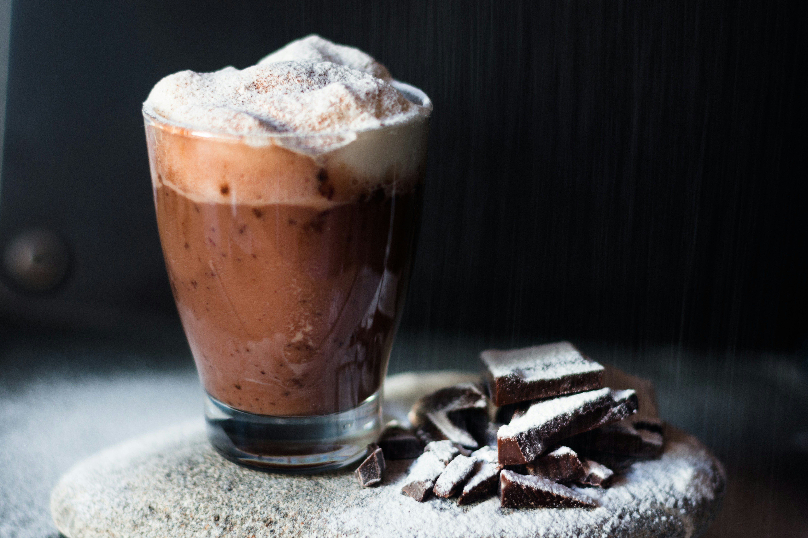

Home
Hot Chocolate

Description
Homemade Hot Chocolate: You sweet, creamy heavenly thing.
If you were wondering how I would like to spend every December evening, it is curled up, with my hands wrapped around a warm mug of hot chocolate. Bonus points if that hot chocolate is topped with freshly whipped cream and a heavy sprinkle of chopped dark chocolate.
Ingredients
- 4 cups milk (preferably whole or 2%)
- ¼ cup unsweetened cocoa powder
- ¼ cup granulated sugar
- ½ cup bittersweet or semisweet chocolate chips or chopped chocolate bar
- ¼ teaspoon pure vanilla extract
Steps
- Place milk, cocoa powder and sugar in a small saucepan.
- Heat over medium/medium-low heat, whisking frequently, until warm (but not boiling).
- Add chocolate chips and whisk constantly until the chocolate chips melt and distribute evenly into the milk. Whisk in vanilla extract and a pinch of salt (if desired), serve immediately.